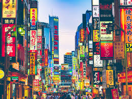
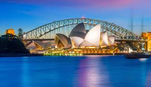
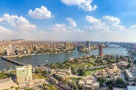

Nueva York
descripcion: Conocida como "La Gran Manzana", Nueva York es una de las ciudades más vibrantes y cosmopolitas del mundo. Es famosa por sus rascacielos emblemáticos como el Empire State Building, el Central Park, y la Estatua de la Libertad. Además, es un centro cultural, financiero y artístico, con Broadway, museos de renombre y una diversidad de comunidades.

Tokio
descripcion: La capital de Japón, Tokio, es una metrópoli que combina lo ultramoderno con lo tradicional. Conocida por su tecnología avanzada, su vida nocturna animada y sus sitios históricos como el Templo Senso-ji, Tokio también es famosa por su cultura pop, incluyendo anime y manga, así como su deliciosa gastronomía, desde sushi hasta ramen.
Paris
descripcion: París: La capital de Francia, París, es famosa por su rica historia, arquitectura impresionante y ambiente romántico. La Torre Eiffel, el Museo del Louvre y la Catedral de Notre-Dame son solo algunas de las atracciones icónicas. París es también un centro de arte, moda y gastronomía, conocida por sus cafés elegantes y su vibrante escena cultural.

Sidney
descripcion: Ubicada en Australia, Sídney es famosa por su impresionante puerto y la icónica Ópera de Sídney. La ciudad ofrece hermosas playas, como Bondi Beach y Manly Beach, y un clima cálido que la convierte en un destino popular durante todo el año. Sídney también cuenta con una vibrante vida nocturna y una rica diversidad cultural.
El Cairo
descripcion: La capital de Egipto, El Cairo, es una de las ciudades más antiguas del mundo y un importante centro cultural y político del mundo árabe. Es famosa por sus proximidad a las Pirámides de Giza y la Esfinge, así como por su rica historia que se refleja en su arquitectura, museos y mercados vibrantes, como el famoso bazar de Khan el-Khalili.
